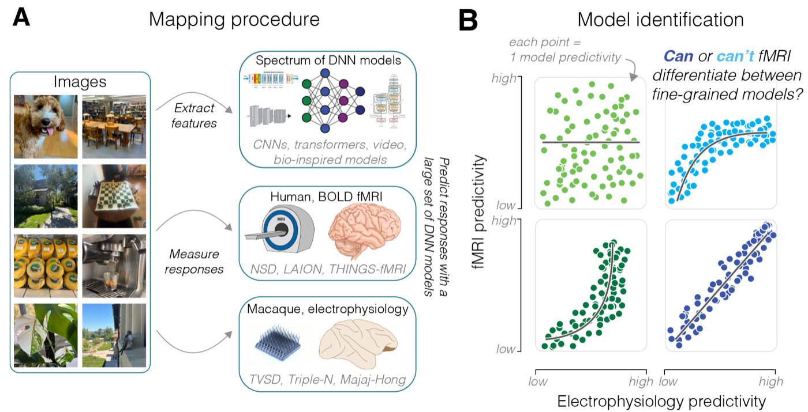

BOLD fMRI supports fine-grained model identification
In preparation · 2026
Abstract
Blood-oxygen-level-dependent functional magnetic resonance imaging (BOLD fMRI) measurements are coarsely reflective of neural computations. The measured BOLD response is a hemodynamic proxy for neural activity which averages that activity substantially across space and time. For that reason, fMRI is generally thought to reflect only coarse-scale computations shared by many neurons within a voxel, and to be less effective at identifying underlying computational motifs than finer-grained measurements such as electrode-based neurophysiological recordings. Here, however, we show that, via an encoding model approach, BOLD fMRI affords fine-grained computational model identification as well as invasive electrophysiological recordings do. We employed an extensive collection of deep neural network models to predict visual cortical responses to naturalistic images, measured with either BOLD fMRI or electrophysiological techniques. The modalities differentiated between models in highly similar ways; moreover, BOLD sensitivity did not plateau relative to that of electrophysiology, suggesting that fine-grained details captured by the most predictive models remain available in BOLD responses. An analysis of the predictions showed that the two modalities differentiated between models largely through the same internal model features, consistent with their doing so via the same computations. BOLD measurements in early visual cortex also differentiated between models by their sensitivity to characteristic fine-grained V1 response properties, even though one of those properties, fine-scale orientation, was barely decodable above chance from the BOLD responses. We demonstrate that this fine-grained model identification from coarse measurements—a form of computational superresolution—may derive from a general mathematical principle: evidence of a computation accumulates across stimuli such that, with sufficiently large datasets, measurements differentiate between candidate models at a finer grain than they resolve. Ultimately, our results suggest a scalable, noninvasive route to identifying fine-grained neural computations.